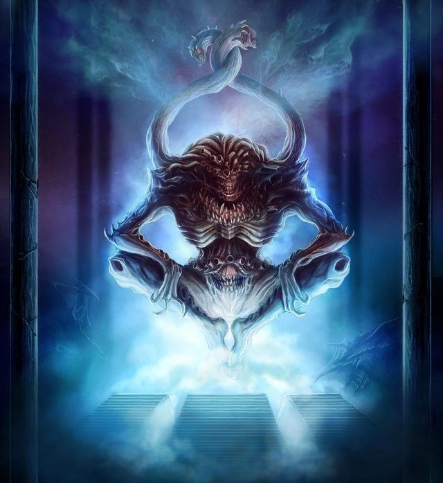

Tzeentch
Tzeentch
Titles
Changer of Ways,
Lord of Change,
Lord of Sorcery,
Architect of Fate,
Great Conspirator,
Great Deceiver,
Lord of Entropy,
Master of Mutation,
Weaver of Destinies,
Father of Lies and Deception,
Great Eagle,
Raven God,
Tchar,
Shunch,
Chen,
Sacred Number
9
Tzeentch is the Chaos God of change, evolution, mutation, intrigue, ambition, knowledge, sorcery, destiny, lies and trickery. Tzeentch is especially empowered by the desire for change and ambition for advancement among mortals.
Tzeentch's true power is sorcery, and as all sorcery flows from the font of the Immaterium, so too is Tzeentch the master of that twisted, chaotic medium of psychic energy. Tzeentch embodies mortals' tendency towards mutability and change, the drive to evolve and manipulate. This spirit is present in the essence of every living creature from the first division of cells in the womb to the ultimate craving for survival.
It is in the hearts of those with the strongest desire to prevail that Tzeentch whispers his insidious promise; offering a means of life eternal to those unwilling to accept death and oblivion as inevitable.
It is also Tzeentch who weaves the threads that connect every action, plot and subtle intrigue in a galaxy-wide game of manipulation and subterfuge. At the end of each of these threads lies the ensnared soul of a Human puppet; those of Tzeentch's mortal servants and agents who believe they serve the Lord of Sorcery in mutually beneficial pacts.
The truth is that Tzeentch's every action is planned with its ultimate goal as his own establishment as the pre-eminent Chaos power in the Realm of Chaos, the ultimate victor in the Great Game. Of course, the very nature of the Lord of Entropy is such that, were he to attain this triumph, he would still strive for turmoil and change. In many ways, Tzeentch is both the best and least understood of the Dark Gods.
He is the god of fate, plots, and schemes, as well as the god that exemplifies the ever-changing nature of the Warp. However, Tzeentch does not plot towards some end (at least none that can be comprehended); he schemes simply to scheme. He is constantly building, even as his devices unravel under their own complexity. At the same time, he is the god of knowledge and comprehension, and his devotees may be those who seek a deeper understanding of an often enigmatic universe.
Tzeentch is known by a hundred thousand titles across the galaxy, amongst them the "Weaver of Destinies," the "Great Conspirator," and the "Architect of Fate." In his mind, he listens to the hopes and desires for change of every sentient being from every planet in the universe. He watches over the plans of his playthings as they unfold into history, toying with fate and fortune; both for his own entertainment and to further his unfathomable schemes.
Tzeentch feeds upon and is empowered by the mortal emotions of need and desire for change that is an essential part of all life in the universe. All people dream of prosperity, freedom from injustice and a better tomorrow. These dreams are not just the preserve of the impoverished or the powerless -- even Imperial planetary governors and Imperial Navy battlefleet admirals dream of further riches, or perhaps even an end to their responsibilities to the Emperor.
All these dreams and desires create a powerful impetus for change, and the ambitions of nations create a force that can challenge history. Tzeentch is the embodiment of that force within the Immaterium. He was the second of the Chaos Gods to come to full sentience within the Warp, sometime during Old Earth's European medieval period in the 2nd Millennium. His birth marked the maturation of Human nations and politics, with all of their implicit intrigues and double-dealings.
Tzeentch is not content to merely observe the fulfillment and disappointment brought by the passage of time. He has his own plans -- schemes that are so complex and closely woven that they touch the lives of every living thing, whether they realise it or not. The Chaos God's masterly comprehension of time, history and intrigue allows his ploys to intertwine seamlessly, forming a web of causality that spans the stars.
Tzeentch is aware of the visions and plans of all mortals in the galaxy. He takes great delight in the plotting and politicking of others and favours the cunning over the strong. When the inner voice in a person's head speaks, when the desperate whisper their prayers into the night, it is the Architect of Fate that listens.
He perceives every event and intention, and from this information, his mighty mind can work out how each will influence the future. The intertwining latticework of probability, hope and change is Tzeentch's meat and drink -- without it he would eventually fade away.
Perhaps the Architect of Fate has plans to overthrow the other Chaos Gods, or to extend his dominion over all the mortal realms. Perhaps not even Tzeentch himself can say for sure. Whatever his ultimate goal, he seeks to achieve it by manipulating the individual lives of Humans and xenos alike.
By offering the power of knowledge and sorcery, he can recruit influential Chaos warlords and magi to his cause, affecting the lives of many more at a single stroke. However, few of Tzeentch's plans are ever simple; some span aeons with their complexity, whilst many appear contradictory to others, or even against his own interests. Only Tzeentch can see the threads of potential futures weaving through time like tangled skeins of multicoloured cords; cords which themselves are made of decision, happenstance and fluke.
Tzeentch is the undisputed master of sorcery in the universe. Sorcery is one of the most potent agents of change, and those who use it are amongst the most ambitious and hungry for power. The raw psychic energy that empowers the psykers of the mortal realm is the actual fabric of the Realm of Chaos, the same fabric that makes up the Ruinous Powers, their Daemon servants and the shadow-selves of mortal consciousness that flicker in the Warp and that Humanity calls souls.
The use of psychic power, or "magic" as it can rightly be called, is held as the ultimate expression of faith among Tzeentch's followers, who have much to gain from his patronage. Though it will likely cost them their immortal souls, they will at least have boundless power to show for it while they live; this is in stark contrast to the poor wretched psykers of the Imperium of Man, who are corralled by the Inquisition's Black Ships and brought to Terra where many of them feed the dying Emperor's boundless hunger for psychic energy to power the Astronomican.
In Tzeentch's eyes, mortal creatures are immeasurably steeped in ambiguity, yet they somehow wage their personal wars completely unaware of the countless contradictions in their souls. Tzeentch cannot help but dabble in the mortal realm; some amongst the Inquisition believe that the Great Conspirator is responsible for the exponential increases of psychic ability in the Human species in recent millennia.
His own need to manipulate and control, and his desire to increase his own power in the Warp, mean Tzeentch is eternally playing the Great Game waged amongst his brother Chaos Gods. The Architect of Fate is not above sullying his clawed hands with the bloody business of war, though he much prefers to win his battles through guile and sorcery than brute force. Consumed by his own ineffable thoughts, Tzeentch binds the galaxy in the weave of his complex schemes just as a spider binds a fly.
Though his schemes can take Terran millennia to unfold, when they come to fruition, it is usually reality itself that pays the price. While one mortal lies to another, while envy and ambition survive among Humans and aliens, Tzeentch will work his magic as the puppet master of the universe, working towards the day when his final great work will be revealed.
Tzeentch exerts his influence in the mortal realm through subtle manipulation and devious ploys. The victims of his corruption are sorcerers drawn by the promise of forbidden knowledge; scholars who seek knowledge at all costs; politicians lured by the power knowledge provides to outmanoeuvre their opponents.
Tzeentch's sacred number is nine, his colours are typically seen as blue and gold but an ever-changing rainbow of colour is appropriate as well, thus giving the name to the Lord of Change's Daemonic armies, the Scintillating Legions.